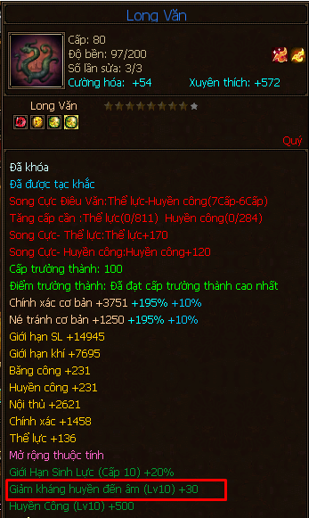
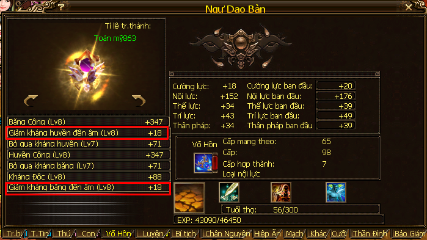

Nhân Vật¶
- Ghi chép một số thông tin về nền tảng của một nhân vật trong Thiên Long Bát Bộ: tâm pháp, tu luyện, kinh mạch, và nói đôi điều về thuộc tính, giảm kháng và giảm kháng đến âm.

Nhấn ALT + S để xem bảng kỹ năng môn phái, có các thông tin về chấm điểm tâm pháp, tu luyện
Tâm Pháp¶
- Cấp tâm pháp môn phái tối đa: 119.
- Điểm tâm pháp tối đa: 4806.
Tu Luyện¶
- Tu luyện gồm có 3 quyển, thực hiện tu luyện hằng ngày tại Đại Lý - NPC Tảo Địa Thần Tăng:
- Quyển 1: Ngũ Hành Bảo Điển - tăng % các thuộc tính cơ bản (cường lực, nội lực, thể lực, trí lực, thân pháp)
- Quyển 2: Vô Nhai Di Thư - tăng % các thuộc tính (nội công, ngoại công, nội thủ, ngoại thủ, chính xác, né tránh)
- Quyển 3: Hạo Thiên Chân Kinh
- Khi quyển 1 và quyển 2 đạt cấp 20 trở lên và đã làm nhiệm vụ Tiến Cấp Môn Phái (cấp 90) thì được học quyển 3 này.
- Tăng hiệu quả 4 đường kinh mạch:
- Thái Dương (tăng sát thương một kỹ năng của bản thân).
- Túc Thái Âm (giảm sát thương một kỹ năng của đối phương).
- Nhậm Mạch (tăng thời gian một kỹ năng khống chế).
- Đốc Mạch (giảm thời gian một kỹ năng khống chế của đối phương).
- Các % tăng sẽ được tính thành các con số màu xanh bên cạnh chỉ số trắng của nhân vật gọi là điểm xanh, cho nên hãy cố gắng max tu luyện để được nhiều % nhất nhé. Khi nhân vật sử dụng nhiều Tiềm Năng Quả, Tiềm Năng Chân Đan thì điểm xanh sẽ càng cao, vì nó được tính từ % của điểm trắng.
- Cấp tu luyện tối đa: 105.
- Điểm tu luyện tối đa: 13272.
- Cấp các phân quyển tu luyện càng cao thì điểm tu luyện của nhân vật càng cao.
- Hiệu quả % của tu luyện càng cao thì cấp tu luyện và cấp nhân vật càng cao.
Cấp tu luyện tối đa là 105, để chuột vào từng quyển tu luyện để xem nó tăng bao nhiêu % nhé!
Kinh Mạch¶
- Khi nhân vật đạt cấp 90, về môn phái và nhận nhiệm vụ Tiến Cấp Môn Phái, sau khi hoàn thành sẽ được phép học quyển Hạo Thiên Chân Kinh (quyển số 3 trong chức năng tu luyện) khi học được 4 phân quyển sẽ được gắn cách mạch tương ứng với các phân quyển đó.
- Điểm tiến cấp kinh mạch tối đa: 4410.
- Cấp các phân quyển tu luyện của quyển 3 - Hạo Thiên Chân Kinh càng cao thì điểm tiến cấp kinh mạch của nhân vật càng cao.

Xem chấm điểm tiến cấp kinh mạch
Thuộc Tính Tấn Công - Giảm Kháng - Giảm Kháng Đến Âm¶
Đây là một vấn đề rất cơ bản và cũng được đồng đạo võ lâm thắc mắc.
Trước hết cần nhấn mạnh rằng việc đi hướng tấn công thuộc tính thay (ưu tiên) cho việc đi nội công/ngoại công là xu thế hiện tại bởi:
- Kinh nghiệm dân gian: 25000 nội công/ngoại công = 1000 thuộc tính.
- Từ kinh nghiệm trên, thực ra cũng có thể tự kiểm chứng, và đã có nhiều người kiểm chứng rồi, chốt lại là cùng một số lượng ngọc nội công/ngoại công đập vào acc thì cũng không bằng đập cùng số lượng ngọc thuộc tính (so sánh sát thương).
Thuộc tính chia ra làm 4 hướng: Băng, Hỏa, Huyền, Độc.
Giảm kháng thuộc tính:
- Là điểm chặn nhằm xác định sát thương thuộc tính của bạn có gây được lên đối phương hay không, nếu giảm kháng thuộc tính của bạn lớn hơn kháng thuộc tính của đối phương thì mới gây được sát thương thuộc tính đó lên người đối phương.
- Ví dụ bạn có 1000 huyền công, giảm kháng huyền là 80, đối phương có kháng huyền là 90. Vậy đối thủ sẽ miễn nhiễm sát thương huyền công của bạn!
- Qua đó cũng cho thấy rằng phải cố gắng đẩy giảm kháng tối đa để triệt hạ kháng của đối thủ, tránh làm giảm kháng lỡ cỡ, vì đi kháng ít tốn chi phí hơn so với giảm kháng, làm lỡ cỡ bị đối thủ cay cú lên kháng tèo ngay cả đường thuộc tính.
Công thức tính điểm thuộc tính thực (LingYun xin mạn phép đặt nó là thuộc tính thực), đây là công thức áp dụng cho 1 hướng thuộc tính, nếu trong nhân vật của bạn có nhiều hướng (băng + hỏa + huyền + độc) thì bạn tính 4 lần rồi tổng nó lại:
S_thuoc_tinh_1 = thuoc_tinh_1 * (100 + giam_khang_am_thuoc_tinh_1) / 100
Ví dụ bạn có 10000 Huyền Công, giảm kháng Huyền đến âm là 48. Vậy nhân vật của bạn có huyền công thực tính là:
S_huyen = 10000 x (100 + 48)/100 = 10000 x 1.48 = 14800.
Công thức tính sát thương: căn cứ vào bảng hệ số sát thương (trên mạng), các hệ số này được nhà vận hành game thiết lập, bạn lấy tổng từng thuộc tính của bạn (tính được ở công thức trên) nhân với hệ số thuộc tính tương ứng.
Ví dụ với mình là Võ Đang, hệ số Huyền Công là 1.1, mình thực tính theo công thức trên thì tính ra được 14000 huyền công, vậy sát thương lên người đối thủ tính riêng của đường huyền công là:
14000 x 1.1 = 15400 ~ nghĩa là huyền công mình đánh lên người đối thủ có thể trừ tới 15400 máu/đòn đánh.
Với một số ví dụ như vậy rồi thì mình nghĩ việc các bạn có thể làm là tính tổng các đường thuộc tính khác nữa (băng, hỏa, độc) trong nhân vật để tính ra được tổng sát thương (lý thuyết) ^^!
Giảm kháng thuộc tính đến âm của nhân vật tối đa là 49 điểm, đến từ các nguồn sau:
30 điểm từ Long Văn - Cấp 10 Thuộc tính mở rộng (dùng Xuyết Long Thạch Bạo).
Long Văn chỉ được có 1 dòng giảm kháng âm, hãy đẩy nó lên cấp 10 cho hướng thuộc tính chính của nhân vật
0 - 19 điểm từ Võ Hồn - Dòng Giảm kháng thuộc tính đến âm và Tư chất Võ Hồn Toàn Mỹ thì mới có khả năng đạt 19 điểm.
Võ Hồn cấp hợp thành 7 thì có tối đa 7 dòng thuộc tính mở rộng, đây cùng với kỹ năng con là cơ hội để đẩy giảm kháng thuộc tính phụ, và giảm kháng âm!
Giảm kháng thuộc tính đến từ các nguồn chính như sau:
- Kỹ năng con.
- Lên ngọc kép.
- Võ hồn.
Qua đó cho thấy việc quan trọng trong việc tăng cấp thuộc tính Võ Hồn, việc đi nhiều dòng giảm kháng thuộc tính, giảm kháng đến âm trên Võ hồn là xu thế của các phái đa thuộc tính, trước là Thiên Long, về sau các phái khác cũng có thể theo: họ đi Võ Hồn 2 - 3 dòng giảm kháng, 2 - 3 dòng giảm kháng đến âm, mặc đồ nhiều thuộc tính nhằm tăng thuộc tính phụ giúp tăng lượng tổng sát thương.
Kinh Nghiệm¶
Khi nào thì khóa lò xo (kỹ năng số 1 quyển tâm pháp số 8) của bạn chiếm ưu thế so với đối thủ:
Là khi tổng điểm tu luyện và tâm pháp của bạn lớn hơn đối phương.
Ví dụ: Nhân vật của bạn có tất cả kỹ năng tâm pháp cấp 103, chấm điểm tâm pháp là 4262, chấm điểm tu luyện là 13272 (đã max tu). Tổng cộng bạn có: 4262 + 13272 = 17534.
Đối phương có tất cả kỹ năng tâm pháp cấp 119, chấm điểm tâm pháp là 4806 (max tâm pháp), chấm điểm tu luyện là 13272 (đã max tu). Tổng cộng đối thủ có: 4806 + 13272 = 18078.
Như vậy khi bạn khóa lò xo lên đối thủ sẽ không đạt hiệu quả cao vì: 17534 (của bạn) < 18078 (đối thủ).
Khi nào thì kinh mạch phát huy tác dụng:
Là khi điểm tiến cấp kinh mạch của bạn lớn hơn hoặc bằng đối thủ. Vì vậy một khi đã đả thông kinh mạch, hãy cố gắng max nhé. Một ví dụ rõ hơn, khi bạn đả thông kinh mạch tăng khống chế (nhậm mạch), và đối phương đả thông giảm khống chế kỹ năng đó (đốc mạch), và cả hai người đều có điểm tiến cấp kinh mạch ngang nhau, thì hiệu quả khống chế của bạn coi như giữ nguyên chứ không được tăng thêm từ kinh mạch vì đốc mạch của đối phương phát huy được gặp nhậm mạch của bạn nên nó hoàn nguyên.
Để đạt hiệu quả % tu luyện cao nhất (nhiều điểm xanh nhất) thì phải max tu và nhân vật phải đạt cấp tối đa là 119.